پذيرش > مقالات > خارج از چارچوب > کمپین از نگاه دوربین / سال دوم
 گزارش تصویری گزارش تصویری

 کمپین از نگاه دوربین / سال دوم کمپین از نگاه دوربین / سال دوم
14 شهریور 1387 - تغییر برای برابری - نسخه قابل چاپ
گزارش تصویری کمپین نگاهی است به تجربه ای که با کمترین امکانات توانست برابرخواهی را به نقاط مختلف کشور گسترش دهد. عکس های این گزارش حاصل تلاش راحله عسگری زاده، آیدا سعادت،پروین اردلان، و ... دیگر دوستانی است که تلاش کرده اند لحظه لحظه این حرکت جمعی را ثبت و منتشر کنند.
گزارش تصویری سال اول کمپین پیش از این منتشر شد و این گزارش نگاهی دارد به فعالیت های اعضای کمپین یک میلون امضا در سال دوم. این گزارش تلاش کرده تا حد امکان تلاش های زنان و مردان برابرخواه کمپین را به تصویر بکشد، با این وجود بسیاری از فعالیت ها و تلاش ها از نگاه دوربین ما دور مانده است و به برخی عکس ها نیز دسترسی نداشته ایم.
5 شهریور 1386 :سالگرد کمپین در رشت
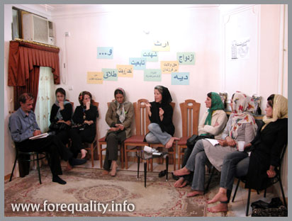

8 شهریور 1386:سالگرد کمپین در شیراز

10 شهریور 1386:سالگرد کمپین در کالیفرنیا

11 شهریور 1386 : نشست کمپین با فعالان اجتماعی بابل

12 شهریور 1386 :نشستی برای نقد لایحه حمایت خانواده
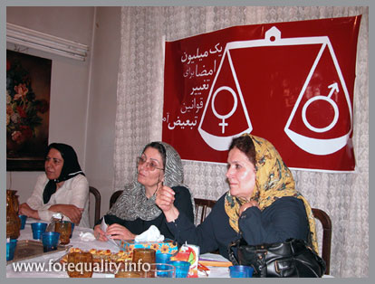
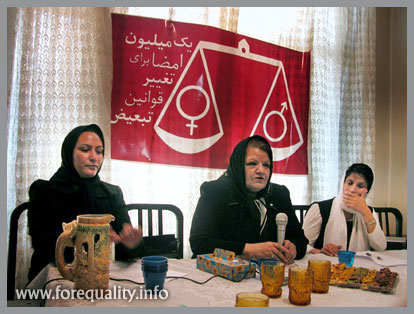
14شهریور 1386 :به مناسبت سالگرد کمپین ، میزگردی را با محوریت نحوه فعالیت کمپین در شهرهای مختلف در کرمانشاه برگزار شد
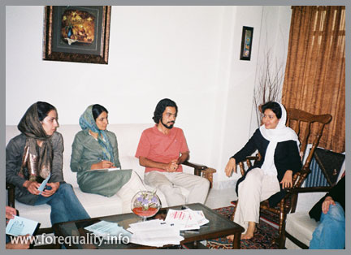
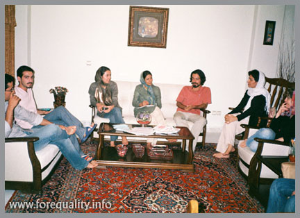
17 شهریور 1386 : سایت کمپین یک میلیون امضا، برای هفتمین بار فیلتر شد

20 شهریور 1386:آغاز به کار کمیته هنری کمپین

20 شهریور 1386 :کنسرت زنان قشقایی به نفع کمپین
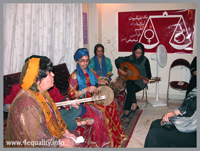
22 شهریور 86: بازداشت 25 نفر در کارگاه آموزشی کمپین یک میلیون امضاء در خرم آباد

31 شهریور 1386 :نشست اعضای کمپین از شهرهای مختلف ایران

21 مهر 1386 :وبلاگ کمیته مردان کمپین راه اندازی شد
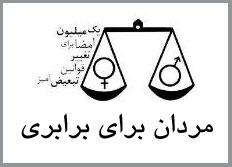
30 مهر 1386 : کمپین در جشن مهرگان کالیفرنیا
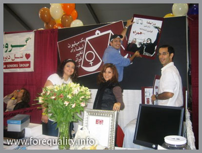
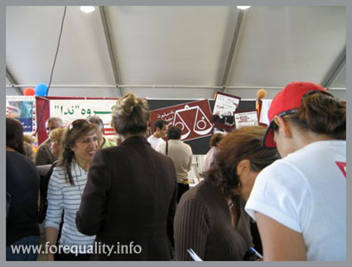
17 مهر 1386: بازداشت ها به کردستان رسید: روناک صفا زاده

12 آبان 1386:دو سال وشش ماه زندان برای دل آرام علی
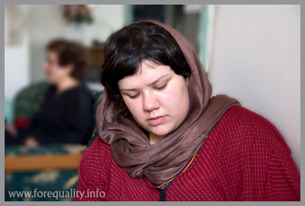
13 آبان 1386:ادامه بازداشت ها در کردستان:هانا عبدی

27 آبان 1386: بازداشت یک روزنامه نگار و وب نگار کمپینی:مریم حسین خواه

10 آذر 1386: بازداشت یک وب نگار دیگر کمپینی :جلوه جواهری
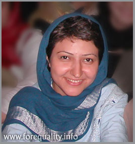
12 دی 1386:آزادی مریم حسین خواه و جلوه جواهری


3 بهمن 1386:آموزش حقوق زن برای اعضای کمپین یک ميليون امضا
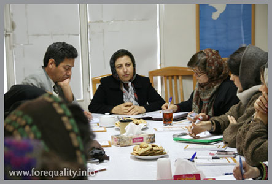
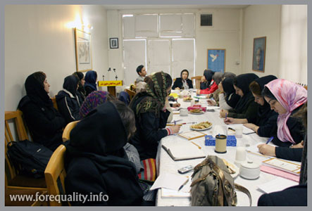
25 بهمن1386:دو بازداشت دیگر برای جمع آوری امضا: راحله عسگری زاده، نسیم خسروی

30 بهمن 1386 :کمپین یک میلیون امضا در مجله انجمن زنان در توسعه

7 اسفند 1386:آزادی راحله عسگریزاده و نسیم خسروی
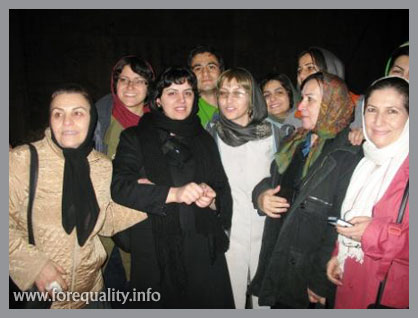
15 اسفند 1386 :نشست کمپینی ها برای بررسی فرصت ها و چالش های کمپین
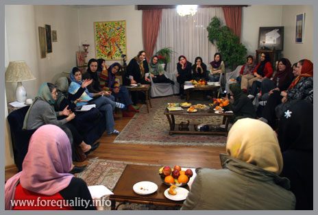
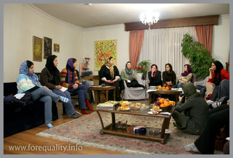
22 اسفند 1386:نمایش تئاتری از زندگی راحله زمانی، زنی که نمی خواست بمیرد

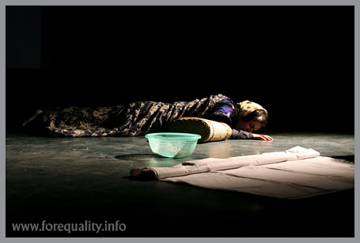
25 اسفند 1386: روز جهانی زن همراه با کمپین در کالیفرنیا
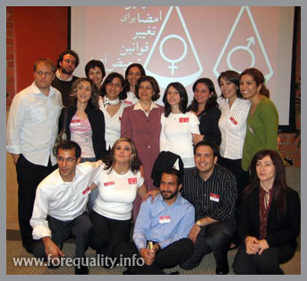
26 اسفند 1386 : نشست اعضای کمپین یک میلیون امضا به مناسبت روز جهانی زن

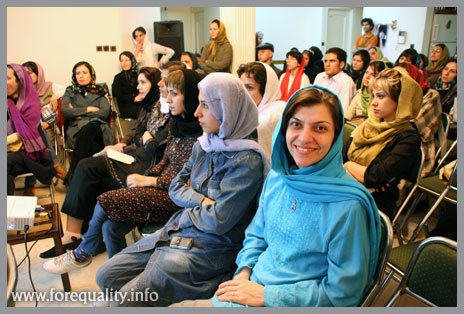
20 فروردین 1387 :خدیجه مقدم بازداشت شد
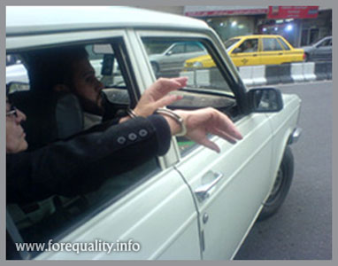
29 فروردین 1387:آزادی خدیجه مقدم
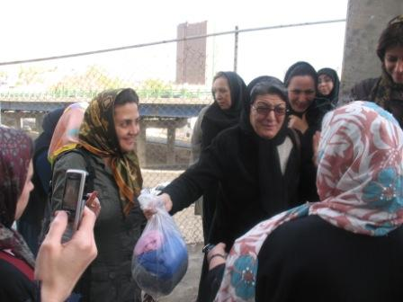
6اردیبهشت 1387 : پنجمین کارگاه آموزشی کمپین در کرج
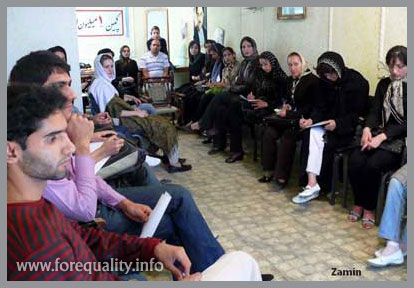
10اردیبشهت 1387:دیدار با کنشگران کمپین یک میلیون امضا در مشهد

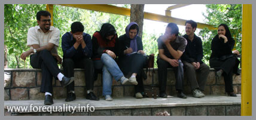
5 خرداد 1387:امیر یعقوبعلی به یک سال زندان محکوم شد

22 خرداد 1387:بازداشت هشت نفر از فعالان جنبش زنان

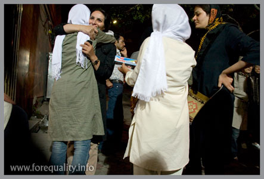
30 خرداد 1387:نقشه گستردگی دامنه فعالیتهای کمپین یک میلیون امضا در ایران و جهان

18 مرداد 1387 :حمایت هانيبال الخاص هنرمند برجسته ایرانی از برابری طلبی

7 شهریور 1387 :دومین سالگرد کمپین یک میلیون امضا زیر سایه ماموران امنیت!


ارسال به
بالاترین
،
توییتر
،
فریندفید
،
فیسبوک
در همين بخش :
 8 مارس روزی که نمی توان از ما دریغ کرد 8 مارس روزی که نمی توان از ما دریغ کرد
با طلاق توافقی از حقارت و کتک و فحش رها شدم /گزارشی از دادگاه محلاتی: مریم مالک
تجمع مادران عزادار در رشت
تغییر ممکن است/ جلوه جواهری(26 روز پس از بازداشت کاوه مظفری)
گامهایی که با تزلزل نا آشنایند/ گرامی داشت چهلم ندا در رشت
ديگر بخش ها :
طرح یک میلیون امضا
|
مقالات
|
سایت نوشته ها
|
اخبار
|
گزارش كمپين
|
گفت و گو
|
علیه سکوت
|
كوچه به كوچه
|
نامه های شما
|
گزارش ویژه
|
گفتگو با اعضا
|
ویژه سالگرد کمپین
|
تصویر برابری
|
دل آرام علی
|
تریبون
|
مقالات
|
تاریخ شفاهی
|
خارج از چارچوب
|
کتابخانه
|
درباره کمپین
|
کمپین در شهرها
|
کمپین در بند
|
صدای تغییر
|
ویژه 22 خرداد
|
لایحه حمایت از خانواده
|
گالری
|
عشا مومنی
|
امیر یعقوبعلی
|
خدیجه مقدم
|
راحله عسگری زاده و نسیم خسروی
|
پروین اردلان،جلوه جواهری، مریم حسین خواه، ناهید کشاورز
|
زینب پیغمبرزاده
|
سعیده امین، سارا ایمانیان، محبوبه حسین زاده، ناهید کشاورز و همایون نامی
|
احترام شادفر
|
نسیم سرابندی زاده،فاطمه دهدشتی
|
وبلاگ مهمان
|
پرونده خرم آباد
|
دستگیری ها
|
مریم مالک
|
پرستو اللهیاری
|
مهرنوش اعتمادی
|
سمیه رشیدی
|
Other Languages
|
همراهان
|
«فراخوان کمپین ده روز با بهاره هدایت»
| English
|